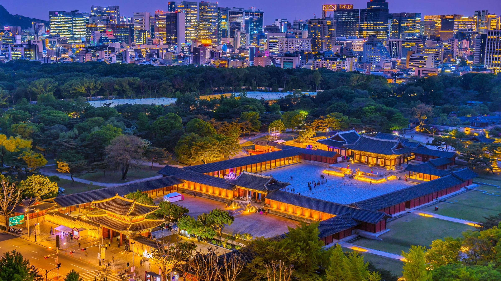

WELCOME TO SOUTH KOREA!
South Korea, an East Asian nation on the southern half of the Korean Peninsula, shares one of the world’s most heavily militarized borders with North Korea. It’s equally known for its green, hilly countryside dotted with cherry trees and centuries-old Buddhist temples, plus its coastal fishing villages, sub-tropical islands and high-tech cities such as Seoul, the capital.
FAMOUS TOURIST SPOT
Seoul
Seoul is the principal tourist destination for visitors; popular tourist destinations outside of Seoul include the major coastal city of Busan, the Seorak-san national park, the historic city of Gyeongju and subtropical Jeju Island.